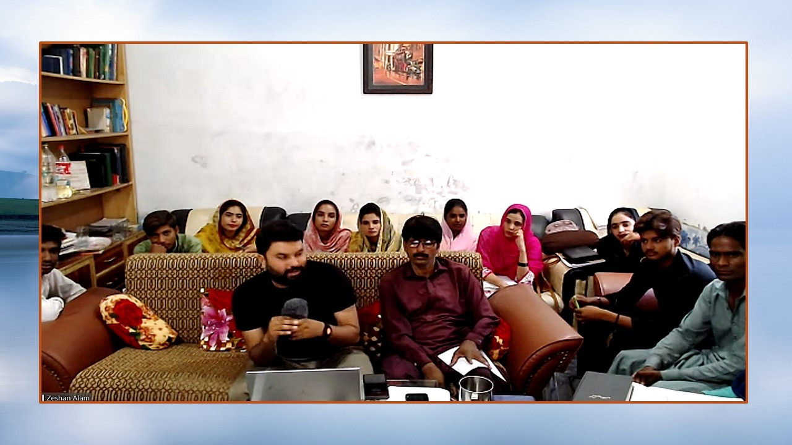

Our Story
WHO WE ARE

Student Orientation in Pakistan
Our professors have traveled the world; they have seen the need for Jesus. We have seen the thirst of Christians to know more. Whether we go to USA, Vietnam, Uganda Africa, Dubai, Pakistan and beyond, our mission is to take the word of God to in leadership
Lamp For The Nations wants you to join us as we teach scripture from a thoughtful, passionate, theologically sound perspective.
Matthew 9:37-38
Then He said to His disciples, "The harvest truly is plentiful, but the laborers are few. Therefore pray the Lord of the harvest to send out laborers into His harvest."
We are serving God's workers all over the world
What We Stand On
OUR CORE BELIEFS
Lamp For The Nations is committed to fulfilling a seven-fold vision and mission. Its primary reason for being is to fulfill the Great Commission of Jesus (Matthew 28:18-20), motivated by Philippians 2:1-4 and directed by the Holy Spirit using the five-fold ministry according to Ephesians 4:11-13 to fulfill the calling of God in the church.
Core Values
- Worship God
- Abundant and extraordinary prayer
- Abundant love - Prefer more than yourself
- Abundant Evangelism
- Abundant Discipling of Believers
- Abundant Compassion
- Abundant Duplication
Core Values-Explanation
We are committed to the following seven core values that produce fruit.
Worship God
John 4:23-24, Revelation 4:10-11; 5:8-14; 7:9-11.
"Worship is an inner attitude and feeling of awe, reverence, gratitude, and love toward God resulting from a realization of who He is and who we are." Steven Cole
Abundant and Extraordinary Prayer
Ps 2:8; Matthew 9:38; Mark 1:35.
The only way we can begin to understand God and His will, is to spend time in fasting and prayer trusting and believing that he will reveal specific details in every situation. Spend time in His presence.
Abundant love - Prefer more than yourself
John 3:16; John 15:13; Philippians 2:1-4.
Prefer others more than yourself, means that we are motivated by our love. John 15:13, declares, "Greater love has no man than this that he would lay down his life for his friend." We are the outward expression of the love of God to the world.
Abundant Evangelism
Matthew 28:19-20; Mark 4: 1-33; Mark1:38-39a; Acts 1:8.
The Great Commission is our daily assignment to be carried out in loving obedience to reach and disciple the lost. We are called to sow seed and then do all we can to bring those that come to Christ to maturity.
Abundant Discipling of Believers and Intentional Planting of Multiple Churches
Matthew 28:18-20; Luke 5:1-11; 9:1; 10:1; 1Cor 15:6; Acts 2:4; Acts 5:42; Acts 16:5; Luke 10.
Whether in homes, cell groups and large gatherings, church planting is a direct result of our commitment to bring the Gospel to the world. We are looking for "Persons of Peace".
Abundant Compassion
Matthew 9:36; Matthew 11:28-30; Mark 6:34; Luke 7:30.
Compassion a feeling of deep sympathy and sorrow or another who is stricken by misfortune, accompanied by a strong desire to alleviate the suffering. (dictionary.com) I define it, "to circle (encompass) someone and their situation with genuine love.
Abundant Duplication – Intentional Church Planting Churches Using the 2-2-2 Plan
2 Timothy 2:2; John 15:5 (bear much fruit); Luke 19:13-26; Acts 8:4; Ephesians 4:11-12; 1 Thessalonians 1:8.
Rapid Reproduction – Jesus left us a plan to carry out the great commission. Jesus summed the disciples to follow him Immediately and they dropped their nets and followed Him. Churches starting churches that start churches, etc.*